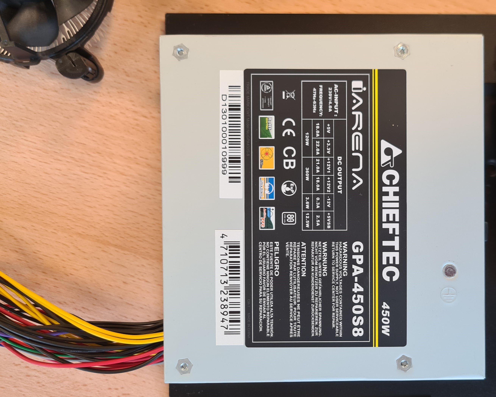

Centralprocessor (CPU)
CPUn är din dators hjärna. Den gör beräkningar och utför kommandon.
Processorer kommer generellt sett från två olika tillverkare, Intel eller AMD, och de boda märkena är INTE kompatibla med varandra.

CPUn är din dators hjärna. Den gör beräkningar och utför kommandon.
Processorer kommer generellt sett från två olika tillverkare, Intel eller AMD, och de boda märkena är INTE kompatibla med varandra.
Moderkortet är det huvudsakliga kretskortet i en dator som fungerar som en central plattform för att ansluta och kommunicera med alla andra komponenter och enheter i systemet. Det innehåller viktiga anslutningar och uttag för processorn (CPU), minnet (RAM), lagringsenheter (som hårddiskar och SSD:er), grafikkort, och andra expansionskort. Moderkortet har också inbyggda kretsar för att hantera dataöverföring mellan dessa komponenter och ofta inbyggda funktioner som ljud, nätverk, och USB-portar.
RAM, eller Random Access Memory, är en typ av datorminne som används för att lagra data och maskinkod som för närvarande används av datorns processor. Det är en flyktig lagring, vilket innebär att informationen försvinner när datorn stängs av. RAM är snabbt och tillåter datorn att snabbt läsa och skriva data, vilket är avgörande för systemets prestanda och förmågan att köra flera applikationer samtidigt.

En HDD är en mekanisk lagringsenhet som använder roterande skivor (platters) belagda med magnetiskt material för att lagra data. Data läses och skrivs av ett rörligt huvud som svävar ovanför skivornas yta. HDD:er är generellt billigare per gigabyte och har större kapacitet, men de är långsammare och mer känsliga för fysiska stötar jämfört med SSD:er.
En SSD är en elektronisk lagringsenhet som använder flashminne för att lagra data. Till skillnad från HDD:er har SSD:er inga rörliga delar, vilket gör dem snabbare, mer hållbara, och mindre benägna att gå sönder vid stötar eller vibrationer. SSD:er är dock vanligtvis dyrare per gigabyte jämfört med HDD:er.
(OBS! På Bilden visas två st. HDD:er)
Ett nätaggregat eller PSU (Power Supply Unit) är en komponent i en dator som omvandlar växelström (AC) från ett vägguttag till likström (DC) som används av datorns interna komponenter. PSU:n levererar den nödvändiga strömmen till moderkortet, processorn, grafikkortet, hårddiskar, SSD:er och andra enheter. Den säkerställer att alla komponenter får rätt spänning och strömstyrka för att fungera korrekt och stabilt.
Ett Grafikkort eller GPU (Graphics Processing Unit) är en specialiserad elektronisk krets som är utformad för att snabbt bearbeta och rendera grafik och bilder. Den används främst i datorer för att hantera grafikintensiva uppgifter som spel, videoredigering, och 3D-modellering. GPU:er kan finnas som integrerade enheter på moderkortet eller som separata grafikkort. De är mycket effektiva på parallell bearbetning, vilket gör dem också användbara för vissa typer av beräkningar utanför grafik, som AI och maskininlärning.

Ett datorchassi är som alla datorkomponenters hus. Datorchassin kommer i olika storlekar, beroende på saker såsom hur många grafikkort som används eller hur stort moderkort man har.